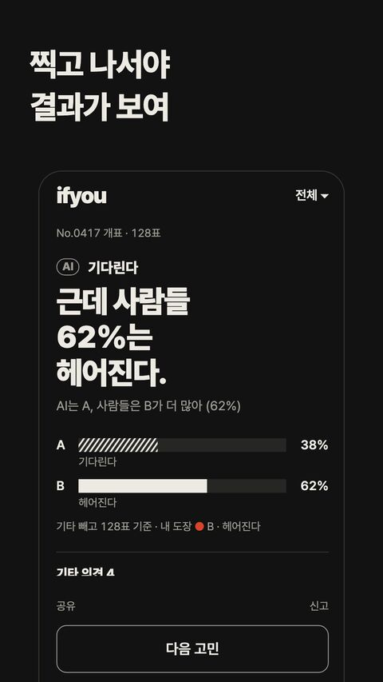
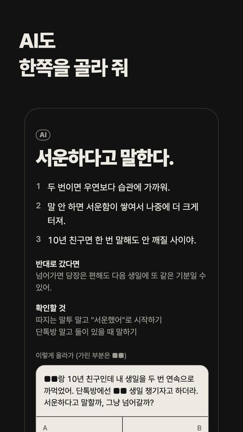
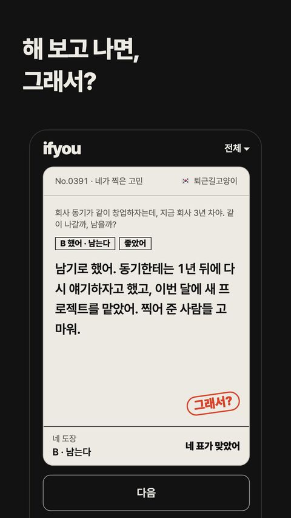
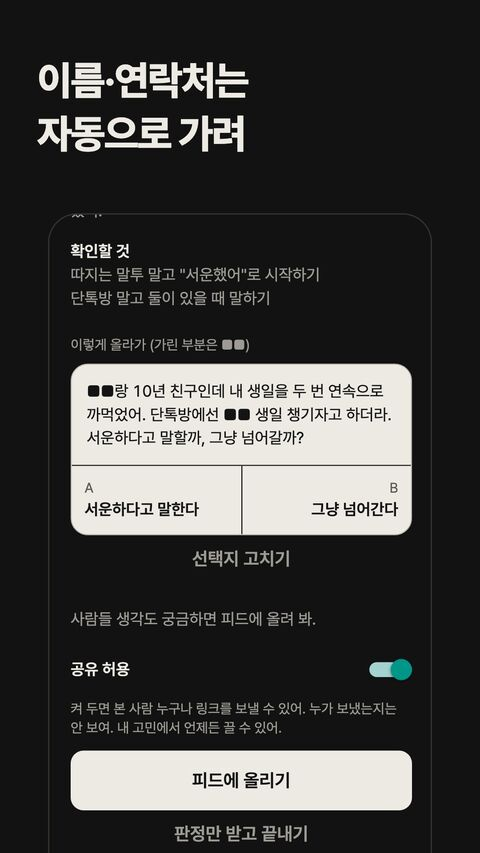
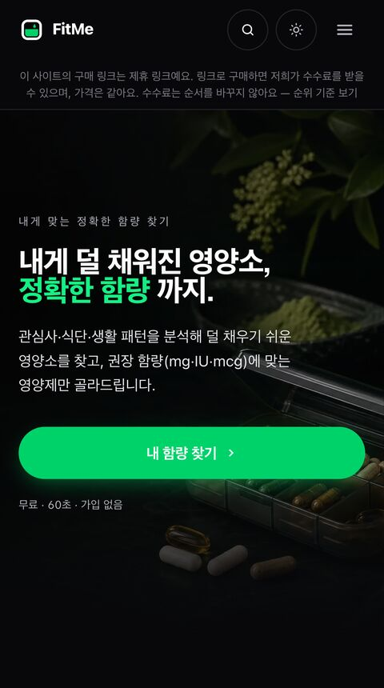
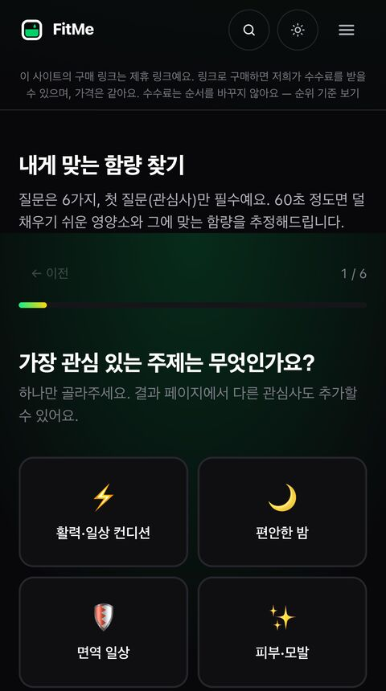
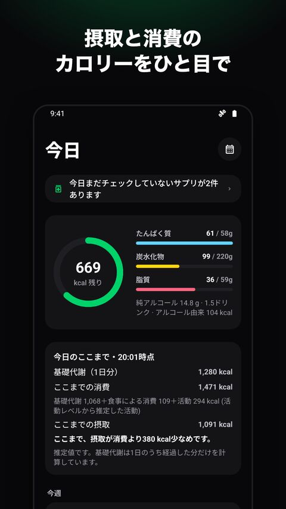
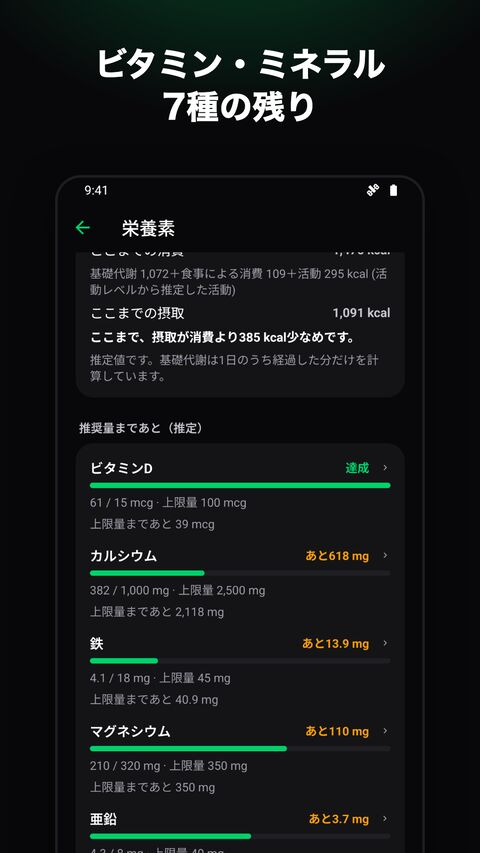

기획, 디자인, 앱·웹·서버, 배포, 운영까지 직접 했다. 코드는 Claude Code·Codex와 같이 짰다.




익명 커뮤니티를 한번 직접 만들어보고 싶었다. 블라인드는 직장인 커뮤니티라 고민을 올려도 회사부터 따지는 댓글이 달리고, AI한테 물어봐도 결국 다른 사람들은 어떻게 생각하는지가 궁금했다. 그래서 아는 사람한테는 못 꺼내는 고민을 모르는 사람들한테 묻고, 투표로 답을 받는 걸 만들었다. 처음부터 그리고 싶었던 그림은 라디오였다. 남의 고민을 라디오 사연처럼 틀어놓고 듣다가 내 생각대로 한 표 찍는 것. 듣기 기능은 지금 출시된 버전에는 아직 없다. 첫 커밋(10/1)부터 두 스토어 출시(10/14)까지 2주 걸렸다.
올리기 전에 이름·연락처 같은 신상 정보를 ■■로 가리고, 카테고리를 붙이고, 비워둔 선택지를 채운다. 출시 전에 실제 글 223건, 한 줄 105건짜리 평가 세트를 만들어 프롬프트를 돌려보고 나서 붙였다. 프롬프트 주입 방어도 따로 넣었다.
만 19세 이상만 가입할 수 있다. VoiceOver로도 투표할 수 있게 사용자 지정 동작을 넣었다.




페츠에서 영양제 어필리에이트를 해봤던 경험을 사람 쪽으로 옮겼다. 처음 목표는 "직구몰이 아니라 추천 허브"였다. 퀴즈로 나한테 맞는 영양제를 고르고, 순위·비교·성분 궁합을 보고 판매처로 넘어가는 구조다. 한국에서 시작했다가 6월에 글로벌 우선으로 방향을 바꿨고, 지금은 7개 국가, 5개 언어로 돈다.
사이트만으로는 다시 올 이유가 약했다. 그래서 식사 사진을 찍으면 오늘 권장량까지 뭐가 얼마나 남았는지 보여주는 앱을 만들었다. 국가별 권장량·상한, Apple Health / Health Connect 연동, 영양제 알림, 위젯, 가족 공유를 넣었고 Free / Pro / Family 요금제로 판다.
사이트와 안드로이드 앱(1.2)은 출시해서 운영 중이고, iOS는 지금 앱스토어 심사를 기다리고 있다. 만드는 건 빨리 됐는데 트래픽과 전환이 아직 숙제다. 요즘은 SEO와 SNS 쪽을 손보고 있다.
| 병원 / 기관 | 기간 | 주요 기능 |
|---|---|---|
| 포항성모병원 iOS | 2015.06~2017.07 | 검진 문진표, 결과 PDF, 알림, 모바일 결제 |
| 대전 선병원 iOS | 2016.12~2017.01 | 모바일 결제(NicePay), 비콘 위치, 처방/영수증, 대기표 |
| 강남 차병원 여성의학연구소 | 2017.03~05 | 비콘 도착확인, 대기표 발권 |
| 선병원 국제검진센터 iOS | 2017.06~07 | 예약/문진, 결과확인 |
| 여성아이병원 iOS | 2015.10~2016.01 | 처방전/결제/대기표, 산후조리원 예약 |
| 해운대 부민병원 iOS | 2015.07~11 | 등원체크, 대기 확인, 공지/알림, 진료내역 |
| 한마음병원 iOS | 2015.10~2016.04 | 문진표, 등원체크 |
| 선치과병원 iOS | 2015.09~ | NicePay 결제, 진료내역 |
| 치과솔루션 iOS | 2016.06~07 | 예약확인/등원체크/치료계획 메시지 |
| 을지대학교병원 검진매니저(Web) | 2016.08~09 | 대기인수/수진자/대기현황 |
| 고스트 인더 미러 iOS | 2017.05~06 | OpenCV 이미지 변환, Wi-Fi 소켓 인증 |
| 롯데시네마 A/S 접수·처리(Web) | 2015.04~06 | 접수/처리자 모드, 장애내역/상태 관리 |
문제 → 접근 → 어려웠던 점 → 해결 → 결과
보호자는 반려동물에게 어떤 건강검진이 필요한지, 어느 병원에 가야 하는지 판단하기 어렵다. 품종·나이·증상에 따라 권장 검진이 달라지지만, 일반 보호자가 이를 수의학적으로 가늠하기는 쉽지 않았다.
강아지가 아프면 보호자가 궁금한 건 세 가지다. 병원에 당장 가야 하나, 집에서 뭘 해주면 되나, 보험 처리는 되나. 지금까지는 이걸 각각 다른 곳에서 찾아봐야 했다.
채팅 하나에서 증상을 듣고, 홈케어 가이드를 주고, 비슷한 증상으로 실제 보험금을 받은 사례까지 보여주기로 했다. 증상 추론은 LLM이 맡되 수의학 근거 범위를 벗어난 말은 못 하게 프롬프트와 출력 형식을 묶었다.
고객사 요청은 RAG였다. 그런데 보험금 사례 데이터가 10만 건이 안 됐다. 이 규모면 임베딩하고 벡터 DB를 붙이는 것보다 직접 매칭하는 쪽이 빠르고 싸다. 무엇보다 "왜 이 사례가 나왔는지"를 설명할 수 있어야 보험사도 보호자도 믿는다고 봤다. 그래서 검색은 알고리즘으로 짜고 LLM은 앞뒤에만 붙였다.
중간 단계가 결정적이라 같은 증상이면 같은 후보가 나온다. 결과가 이상하면 어느 단계에서 틀렸는지 바로 보인다.
증상 상담, 홈케어, 보험 사례가 한 채팅으로 이어지는 상담을 DB손해보험 제휴 서비스로 약 한 달 만에 개발하고 연동까지 끝냈다.
규제 샌드박스 실증으로 진행한 영양제 소분 서비스는 영양사·약사의 대면/비대면 상담이 필수였다. 회사는 이를 위해 비대면 상담 플랫폼을 구축하기로 했고, 고객과 상담사가 실시간으로 얼굴을 보며 상담할 수 있는 화상상담 채널이 필요했다.
기존 늘펫 서비스는 050 안심번호를 통해 상담 통화를 제공했지만, 050 방식 자체의 제약이 있어 통신 3사 CTI와의 연결이 필요했다. 외주사가 기본적인 CTI만 개발해 제공했으나, 회사가 실제로 쓰는 요구사항과는 달라 회사 요구사항에 맞춰 직접 개발을 진행해야 했다. 또한 타 프로젝트에서도 같은 서비스를 함께 쓰기 위해, 세종텔레콤의 050 서비스를 외주사가 만든 서비스에 통합할 필요가 있었다.
대형 병원은 접수·대기·수납이 창구에 몰려 대기 시간이 길고 위치 안내가 어려웠다. 진료카드·문진표·영수증 등 종이 절차도 비효율적이어서 모바일로 병원 동선을 자동화할 필요가 있었다.